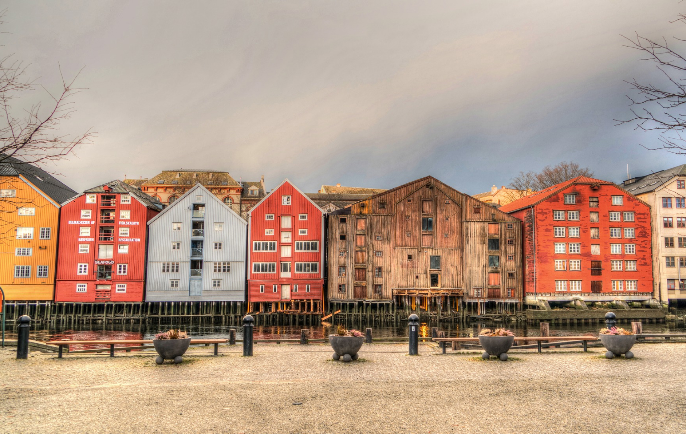

Man regner med at byen ble grunnlagt i år 997 av Olav Tryggvason. Arkeologiske funn tyder på at det også har vært bosetninger rundt Nidelvas utløp også før den tid utover gårdsbruk, trolig sjøbuer for handelsvirksomhet. Det er gjort gravfunn som bekrefter bosetting på Nidarneset sentralt i dagens bykjerne rundt 400 f.Kr. Nidarosdomen ble bygd mellom 1070 og 1300, og er Norges mest sentrale kirke. Grunnloven av 1814 slo fast at den skulle være kroningskirken for Norges regent; dette gjelder ikke lenger, men siden 1958 har den blitt brukt til signing av de kongelige. Ifølge tradisjonen er Nidarosdomen gravkirken til Olav den hellige; imidlertid har senere utgravninger i Trondheim avdekket Clemenskirken, hvor helgenkongens kiste ble satt på alteret i år 1031, året etter slaget på Stiklestad.
Beliggende ved munningen av elven Nid (Nidelva) var stedet først kjent under navnet Nidaros (norrønt Niðaróss), som betyr byen ved oset av Nid. Ved opprettelsen av Nidaros erkebispedømme i 1152 ble navnet latinisert til Trundum (Trundensis) i Vatikanet. Nidaros trundensis betyr rett oversatt Nidaros av trundum eventuelt trondæm (Trønderfylkene). Hos Eirik Ivarsson anno 1192, heter byen Nidaros både i Nidaros, Norge og i Roma. Nidaros-navnet på byen kom senere i bakgrunnen av flere grunner, først og fremst fordi erkebispesetet forsvant i 1537.